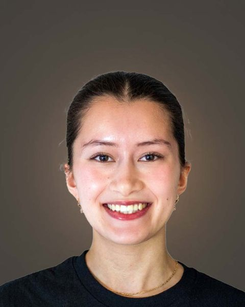
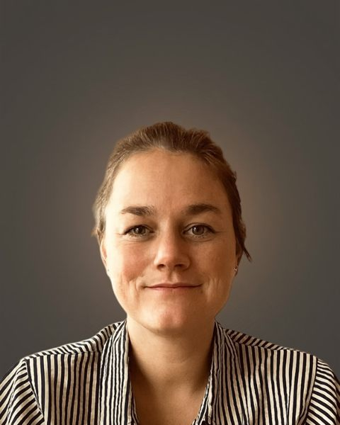

Healthier in body, happier in soul, longer in life.
En blodprøve hjemme hos dig.
 Licenseret
Licenseret
Kend dine tal.
Et blodprøvesvar er ikke en dom.
Ingen henvisning · ingen venteliste
 Stock · ikke Pandonia
Stock · ikke Pandonia
Én af markørerne
Lavt D-vitamin er udbredt i Danmark, især i vinterhalvåret.
Påvirker immunforsvar, knoglestyrke og mental balance.
Awaiting clinical review — EnglishLow vitamin D is common in Denmark, particularly through the winter.
Awaiting clinical review — EnglishIt affects the immune system, bone strength and mental balance.
Tests og priser
Én samlet test.Eller ét spørgsmål ad gangen.
Health Test giver det samlede overblik.
Health Test.
30+ biomarkører.
30+ markører3.500 kr.
Mænds sundhed.
Testosteron · D-vitamin
2 markører1.400 kr.
Stofskifte.
TSH, T3 og T4
3 markører1.600 kr.
D-vitamin.
Dit niveau af D-vitamin
1 markør1.000 kr.
Eller følg det over tid.
Med medlemskabet får du en Health Test hvert kvartal.
Til gennemsynOpbygget som landingssidens "Curated panels", men med Pandonias egne tests og priser fra bookingsystemet. Landingssidens paneler (Core health 42 markører, Women's hormone m.fl.) findes ikke i bookingsystemet og er ikke brugt. Kortenes toppe er toneflader i CSS, ikke fotos.
For reviewBuilt like the landing page's "Curated panels", but with Pandonia's own tests and the booking system's prices. The landing page's panels (Core health 42 markers, Women's hormone and others) do not exist in the booking system and are not used. The card tops are CSS tonal fields, not photographs.
Sådan fungerer det
Fire trin.Otteogfyrre timer.
Fra bestilling til en rapport, der er klar til klinikeren.
01
Du bestiller
Vælg et panel, eller sammensæt dit eget.
02
Vi indsamler
Blodprøvetagning hjemme hos dig.
03
Vi analyserer
Analyseret i vores eget laboratorium.
04
Svar på 48 timer
En rapport, der er klar til klinikeren.
Til gennemsyn — tekst fra landingssidenTeksten er taget ordret fra Pandonias landingsside (B2B) efter ønske; den danske er en oversættelse og skal godkendes. Den modsiger resten af sitet på fire punkter: 48 timer (sitet siger svar samme dag / 2–4 timer), Randox (ikke nævnt andre steder), partnerportal og "din klient" (henvender sig til klinikker, ikke til private), og prøvetagning "i din klinik" (ikke et tilbud til private). Skal afklares før lancering.
For review — copy from the landing pageThis text is taken verbatim from Pandonia's landing page (B2B), as requested. It contradicts the rest of the site on four points: 48 hours (the site says same-day / 2–4 hours), Randox (not mentioned anywhere else), partner portal and "your client" (addresses clinics, not private customers), and collection "at your clinic" (not offered to private customers). To be resolved before launch.
Seks systemer. Én blodprøve.
Rapporten scorer hvert system.
Navne verificeret
Terminologi til gennemsynRækkerne bruger nu rapportens navne — Signaling, Highway, Digestion, Energy, Defense, Waste — som hovednavn, fordi det er dem kunden møder i sin rapport. FAQ'ens danske navne står under som forklaring. Ingen nye oversættelser. Scoregrundlaget er citeret fra rapportens vejledning; den danske formulering er en oversættelse og skal godkendes. Radarens tal er fra Pandonias rapport-UI-mockup, ikke en patient.
Terminology under reviewThe rows now lead with the report's names — Signaling, Highway, Digestion, Energy, Defense, Waste — because those are what a customer meets in their report. The English FAQ names sit underneath as a gloss; two published English sets still disagree on three of six. The score basis is quoted from the report's guide. The radar values come from Pandonia's report-UI mockup, not from a patient.
Din rapport
Hver måling, med sine områder ved siden af.
Optimalt område, referenceområde og uden for området.
Eksempel fra rapportens vejledning
 Ægte · produktrender
Ægte · produktrender
En læge læser tallene med dig.
Benedikte Halle er læge hos Pandonia.
Laboratoriet
Vi har vores eget laboratorium på Langebrogade i København. Det er grunden til, at svaret kan nå frem samme dag.
Awaiting sign-off — English wordingWe have our own laboratory on Langebrogade in Copenhagen. That is why the answer can reach you the same day.
To måder at begynde på.
- Health Test + ConsultationPandonia Score og seks systemscorer.4.750 kr.
- Health TestSamme markører.3.500 kr.
Enkelte tests fra 1.000 kr.
Eller følg din sundhed løbende med et medlemskab. Se medlemskabet
Ét tal fortæller sjældent noget alene.
En blodprøve er ikke en facitliste.
Markørnavne verificeret
 Stock · ikke Pandonia
Stock · ikke PandoniaAlle markører
Ingen markører matcher.
Kroppen arbejder ikke i kasser.
Pandonia-modellen beskriver seks systemer.
Niveau 3 — afventer klinisk godkendelseEnheder, referenceområder, markør-til-system-mapping, fortolkning og scoreberegning findes ikke offentligt og er ikke gættet.
Level 3 — awaiting clinical approvalUnits, reference ranges, marker-to-system mapping, interpretation and score calculation are not published anywhere and have not been guessed.
Følg dine egne tendenser over tid.
Omskrevet fra Pandonias egen tekst
- Skab din baseline
- Følg udviklingen over tid
- Se dine markører i sammenhæng
Det, der har flyttet sig.
Score over tid
Til gennemsyn
"Baseline" er ikke et ord fra Pandonias eget materiale — de to andre punkter er støttet af "følge dine egne tendenser" og rapportens "Score over time". Kortet bruger rapportens eget vejledningseksempel, GLU 5,1. Enheden er rettet: vejledningen skriver nmol/L, men glukose måles i mmol/L. Bjælkens zoner er gengivet fra vejledningen og er ikke et verificeret referenceområde for glukose. Score-forløbet er skematisk, uden tal.
"Baseline" is not a word from Pandonia's own material — the other two points are supported by "follow your own trends" and the report's "Score over time". The card uses the report's own guide example, GLU 5.1. The unit is corrected: the guide says nmol/L, but glucose is measured in mmol/L. The bar's zones are reproduced from the guide and are not a verified reference range for glucose. The score trace is schematic, with no numbers.
Hvad vi ikke måler.
Afventer klinisk tekstEt kort afsnit om hvad testen ikke dækker, og hvornår man skal tale med sin egen læge i stedet.
Awaiting clinical textA short section on what the test does not cover, and when to speak to your own doctor instead.
Hvad der sker med din prøve.
Fire trin, på én dag.
 Ægte · Pandonia
Ægte · PandoniaInden
Aftenen inden
Fast i mindst 12 timer.
Vi anbefaler at prøven tages tidligt på dagen.
01 · Indsamling
Vi kommer til dig
Vores blodprøvetager har erfaring fra flere hospitaler.
Afventer godkendelseBookingsystemet afsætter 10 minutter til Health Test og 15 til test med konsultation. Hjemmesiden siger fem minutter. Hvilket tal er det rigtige udadtil?
Awaiting sign-offThe booking system allocates 10 minutes for the Health Test and 15 for test with consultation. The site says five minutes. Which figure is customer-facing?
Vi kommer i disse områder
København K, N, NV, V, S, SV, Ø, Frederiksberg og Hellerup.
02 · Transport
Direkte til laboratoriet
Prøven bringes direkte til vores eget laboratorium.
03 · Analyse
Laboratoriet
Vi har vores eget laboratorium på Langebrogade.
Vi analyserer selv, i samme by som du bor i.
 Ægte · bygningen
Ægte · bygningen Stock · ikke Pandonia
Stock · ikke Pandonia Stock · ikke Pandonia
Stock · ikke Pandonia- Adresse
- Langebrogade 3A, 2. sal
1411 København K - Akkreditering
- AfventerUnder hvilken godkendelse laboratoriet drives.
- Metode
- AfventerHvilke analyser køres i huset.
- Kvalitetskontrol
- AfventerHvordan resultater kontrolleres.
04 · Gennemgang
Rapporten
Afventer godkendelseEr 2–4 timer typisk eller bedste tilfælde? Et interval præsenteret som et løfte har brug for et oplyst grundlag.
Awaiting sign-offIs 2–4 hours typical or best case? A range presented as a promise needs a stated basis.
Den er skrevet til at blive læst af dig.
04 · Gennemgang
Samtalen
Det, du får, er ikke en liste med tal.
Hver måling står med sit optimale område og sit referenceområde.
 Ægte
ÆgteOversigt
Seks systemer. Én samlet score.
Hvert område afspejler et centralt system i kroppen.
Pilen viser ændringen siden sidste måling.
 Ægte UI · stock-foto
Ægte UI · stock-fotoEksempel fra Pandonias rapport-UI
KildeForklaringsteksten er oversat fra rapportens "How to read my results?" og skal godkendes på dansk. Radarens tal er fra Pandonias rapport-UI-mockup — ikke fra en patientrapport. At de seks scorer ligger tæt ved 100 er også sådan, Pandonias egen rapport tegner dem.
SourceThe explanation is quoted from the report's "How to read my results?", lightly edited for grammar. The radar values come from Pandonia's report-UI mockup — not from a patient report. Six scores sitting close to 100 is also how Pandonia's own report draws them.
Én markør
Sådan læser du en måling.
Optimalt område
Hvor kroppen fungerer mest balanceret.
Referenceområde
Sundhedsvæsenets normalværdier.
Uden for området
Uden for de anbefalede grænser.
Definitionerne er fra Pandonias rapport
Til gennemsynDe tre definitioner er citeret fra rapportens vejledning (engelsk) og oversat til dansk — den danske tekst skal godkendes. Rapportens farver er grøn / gul / rød; det erstatter den tidligere regel om ingen trafiklys, fordi det er produktets eget sprog. GLU-eksemplet: vejledningen skriver nmol/L, her rettet til mmol/L.
For reviewThe three definitions are quoted from the report's guide. The report uses green / yellow / red; this supersedes the earlier no-traffic-light rule, because it is the product's own language. GLU example: the guide says nmol/L, corrected here to mmol/L.
Over tid
Score over tid.
Hver ny måling lægger et punkt til.
Opmærksomhed
Resultater værd at holde øje med.
Målinger uden for området samles ét sted.
Eksempel · anonymiseret
 Stock · ikke Pandonia
Stock · ikke PandoniaOg så er der samtalen.
Tyve minutter online med en læge.
Er du i tvivl, så book en konsultation.
Vi ville gerne gøre det nemmere at se efter.
Pandonia er et lille hold i København.
 Ægte · Pandonias lokaler
Ægte · Pandonias lokalerHvorfor hjemme
De fleste udskyder en blodprøve, fordi den koster en formiddag.
Fem minutter, og dagen fortsætter.
 Ægte
ÆgteHvorfor vores eget laboratorium
Det havde været billigere at sende prøverne videre.
Laboratoriet ligger på Langebrogade.
Modellen
Pandonia Health-modellen.
Vi kan ikke love beskyttelse mod dem.
Holdet
Seks mennesker i København.
- Ægte
Cecilie Lange
Projektleder
- Ægte
Victor Prehn
Ansvarlig for SoMe og branding

ÆgteDeborah Saren
Blodprøvetager og bioanalytiker
- Ægte
Carol Melo
Leder af forskningsafdelingen
- Ægte
Laura D. Ellis-Aguilar
Biomedical Research Scientist

ÆgteBenedikte Halle
Læge
Parret — kildeHvert portræt er matchet mod holdsiden på pandonia.com/en, hvor de samme studiefotos står med navn og rolle. Pandonia offentliggør dem allerede selv. Deborahs danske titel står ikke på den danske side — "blodprøvetager" er Pandonias eget ord fra deres FAQ. Et portræt af en mand (original 12) optræder ikke på holdsiden og er fjernet.
Matched — sourceEach portrait is matched against the team section on pandonia.com/en, where the same studio photographs appear with name and role. Pandonia already publishes them itself. Deborah's Danish title is not on the Danish page — "blodprøvetager" is Pandonia's own word from its FAQ. A portrait of a man (original 12) does not appear on the team page and has been removed.
Spørgsmål, i den rækkefølge de plejer at komme.
Tre måder at bruge Pandonia.
Test én gang, vælg en fokuseret test — eller følg din sundhed løbende.
Afvigelse på pandonia.comHjemmesiden lister "20-minute online doctor consultation" under The Health Test (3.500 kr.), men konsultationen er netop det, der adskiller Health Test + Consultation. Vist her uden konsultation. Priser verificeret fra Pandonias bookingsystem.
Discrepancy on pandonia.comThe site lists "20-minute online doctor consultation" under The Health Test (DKK 3,500), but the consultation is precisely what distinguishes Health Test + Consultation. Shown here without it. Prices verified from Pandonia's booking system.
Når du har ét bestemt spørgsmål.
Seks fokuserede tests.
Kommerciel gennemgang påkrævetPriserne her er fra Pandonias bookingsystem, hvor kunden faktisk betaler. Den engelske hjemmeside viser andre priser for tre af seks: D-vitamin 950 kr. (bookingsystem 1.000), glukosemonitorering 1.350 kr. (2.000) og "Digestion Health Test" 1.800 kr. (Blodsukker- og Kolesteroltest, 1.300). Den engelske side angiver også Thyroid Health Test som 1.600 inkl. og 1.800 ekskl. moms — ekskl. kan ikke være højere end inkl. De engelske testnavne er Pandonias egne; "Digestion" dækker en kolesterol- og HbA1c-test. "Health check + Female hormones" findes ikke længere i bookingsystemet og er fjernet.
Commercial review requiredThese prices come from Pandonia's booking system, where the customer actually pays. The English website shows different prices for three of six: Vitamin D DKK 950 (booking system 1,000), glucose monitoring DKK 1,350 (2,000) and "Digestion Health Test" DKK 1,800 (Blodsukker- og Kolesteroltest, 1,300). It also lists Thyroid Health Test as 1,600 incl. and 1,800 excl. VAT — excl. cannot exceed incl. The English test names are Pandonia's own; "Digestion" covers a cholesterol and HbA1c test. "Health check + Female hormones" no longer exists in the booking system and has been removed.
Medlemskab
Et løbende billede af din sundhed.
En enkelt Health Test viser, hvor du står i dag.
- Mål
- Forstå
- Følg udviklingen
- Mål igen
All inclusive
The Pandonia Membership
2.000 kr.
pr. måned
inkl. moms · 1.600 kr. ekskl. moms
Betales månedligt
Inkluderet
Afklaret — kilderBookingsystemets eneste aktive abonnement (806, "The Pandonia Membership", 2.000 kr./md.) og den engelske hjemmeside ("All inclusive", 2.000 inkl. / 1.600 ekskl. moms) viser samme medlemskab med samme ni fordele. Den danske pandonia.com viser stadig tre udgåede planer — 3.000, 3.699 og 6.100 kr./md. — og deres Tilmeld-knapper fører til abonnementer, der ikke findes (404). De skal fjernes fra den nuværende side. Ikke offentliggjort: bindingsperiode og opsigelse. Medlemskabets konsultation er beskrevet som "personlig rådgivning og opfølgning", ikke som en lægekonsultation.
Resolved — sourcesThe booking system's only active subscription (806, "The Pandonia Membership", DKK 2,000/mo) and the English website ("All inclusive", 2,000 incl. / 1,600 excl. VAT) show the same membership with the same nine benefits. The Danish pandonia.com still shows three retired plans — DKK 3,000, 3,699 and 6,100/mo — whose Subscribe buttons lead to subscriptions that do not exist (404). They should come off the current site. Not published: binding period and cancellation. The membership consultation is described as "personal advice and follow-up", not as a doctor consultation.
Forskellen, kort fortalt.
Begynd med én prøve. Eller bliv ved.
Hvad der sker, når du har booket
Også som klippekort.